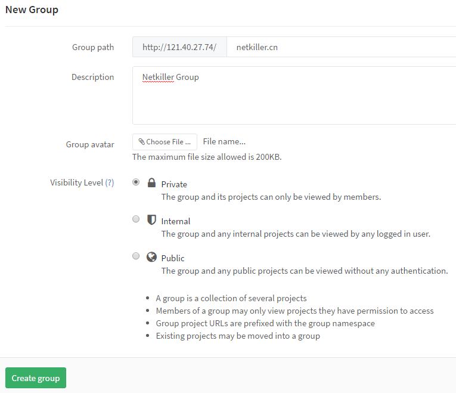
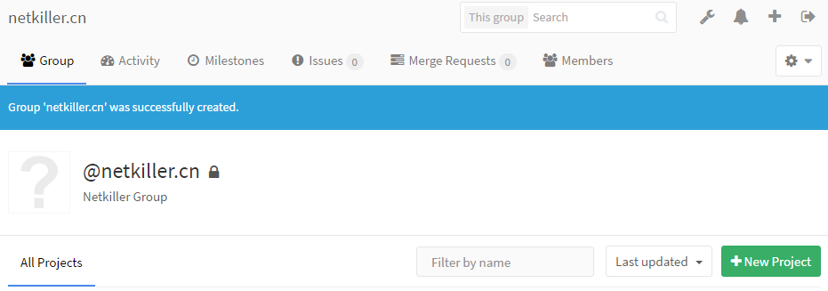

| 知乎专栏 |
Gitlab 安装完成之后，我们需要对它做一个初始化操作。
CentOS 8 / Rockey 8.5 初始化脚本
dnf -y upgrade
dnf -y install epel-release
dnf install -y bzip2 tree psmisc \
telnet wget rsync vim-enhanced \
net-tools bind-utils
timedatectl set-timezone Asia/Shanghai
dnf install -y langpacks-en glibc-langpack-en
localectl set-locale LANG=en_US.UTF-8
cat >> /etc/environment <<EOF
LC_ALL=en_US.UTF-8
LANG=en_US.UTF-8
LC_CTYPE=UTF-8
EOF
cat >> /etc/profile.d/history.sh <<EOF
# Administrator specific aliases and functions for system security
export HISTSIZE=10000
export HISTFILESIZE=10000
export HISTTIMEFORMAT="%Y-%m-%d %H:%M:%S "
export TIME_STYLE=long-iso
EOF
source /etc/profile.d/history.sh
cp /etc/selinux/config{,.original}
sed -i "s/SELINUX=enforcing/SELINUX=disabled/" /etc/selinux/config
setenforce Permissive
cat >> /etc/sysctl.conf <<EOF
# Netkiller
net.ipv4.ip_local_port_range = 1025 65500
net.ipv4.tcp_tw_reuse = 1
net.ipv4.tcp_keepalive_time = 1800
net.core.netdev_max_backlog=3000
net.ipv4.tcp_max_syn_backlog = 1024
net.ipv4.tcp_max_tw_buckets = 4096
net.core.somaxconn = 1024
# TCP BBR
net.core.default_qdisc=fq
net.ipv4.tcp_congestion_control=bbr
EOF
sysctl -p
cat > /etc/security/limits.d/20-nofile.conf <<EOF
* soft nofile 65535
* hard nofile 65535
EOF
groupadd -g 80 www
adduser -o --uid 80 --gid 80 -G wheel -c "Web Application" www
curl -L "https://packages.gitlab.com/install/repositories/runner/gitlab-runner/script.rpm.sh" | sudo bash
dnf install -y gitlab-runner
cp /etc/gitlab-runner/config.toml{,.original}
systemctl enable gitlab-runner
dnf config-manager --add-repo=https://download.docker.com/linux/centos/docker-ce.repo
dnf install -y docker-ce
systemctl enable docker
systemctl start docker
GID=$(egrep -o 'docker:x:([0-9]+)' /etc/group | egrep -o '([0-9]+)')
adduser -u ${GID} -g ${GID} -G wheel -c "Container Administrator" docker
usermod -aG docker www
usermod -aG docker gitlab-runner
usermod -aG www gitlab-runner
dnf remove -y python36
dnf install -y python39
pip3 install docker-compose netkiller-devops
Mirror
cat << EOF > /etc/docker/daemon.json
{
"registry-mirrors": [
"https://docker.mirrors.ustc.edu.cn",
"https://registry.docker-cn.com",
"https://registry.cn-hangzhou.aliyuncs.com",
"http://hub-mirror.c.163.com"
]
}
EOF
dnf install -y java-1.8.0-openjdk java-1.8.0-openjdk-devel maven
最新版 3.8.4 安装脚本
cd /usr/local/src/
wget https://dlcdn.apache.org/maven/maven-3/3.8.4/binaries/apache-maven-3.8.4-bin.tar.gz
tar zxf apache-maven-3.8.4-bin.tar.gz
mv apache-maven-3.8.4 /srv/
rm -f /srv/apache-maven
ln -s /srv/apache-maven-3.8.4 /srv/apache-maven
alternatives --remove mvn /usr/share/maven/bin/mvn
alternatives --install /usr/local/bin/mvn apache-maven-3.8.4 /srv/apache-maven-3.8.4/bin/mvn 0
cp /srv/apache-maven/conf/settings.xml{,.original}
vim /srv/apache-maven/conf/settings.xml <<end > /dev/null 2>&1
:158,158d
:164,164s/$/ -->/
:wq
end
mvn -v
默认安装
dnf install -y nodejs npm config set registry https://registry.npm.taobao.org npm install -g cnpm
官网最新版
dnf remove -y nodejs cd /usr/local/src wget https://nodejs.org/dist/v16.13.1/node-v16.13.1-linux-x64.tar.xz tar xf node-v16.13.1-linux-x64.tar.xz mv node-v16.13.1-linux-x64 /srv/node-v16.13.1 rm -f /srv/node ln -s /srv/node-v16.13.1 /srv/node alternatives --install /usr/local/bin/node node /srv/node/bin/node 100 \ --slave /usr/local/bin/npm npm /srv/node/bin/npm \ --slave /usr/local/bin/npx npx /srv/node/bin/npx \ --slave /usr/local/bin/corepack corepack /srv/node/bin/corepack node -v
dnf remove -y nodejs cd /usr/local/src wget https://nodejs.org/dist/v17.2.0/node-v17.2.0-linux-x64.tar.xz tar xf node-v17.2.0-linux-x64.tar.xz mv node-v17.2.0-linux-x64 /srv/node-v17.2.0 rm -f /srv/node ln -s /srv/node-v17.2.0 /srv/node alternatives --install /usr/local/bin/node node /srv/node/bin/node 100 \ --slave /usr/local/bin/npm npm /srv/node/bin/npm \ --slave /usr/local/bin/npx npx /srv/node/bin/npx \ --slave /usr/local/bin/corepack corepack /srv/node/bin/corepack node -v
初始化GitLab，进入Admin area，单击左侧菜单Users，在这里为gitlab添加用户
为什么要使用组？
组可以共享标记、里程碑、议题、会员权限和Gitlab Runner 执行器，如果不实用组，就只能一个项目一个项目的去配置。
初始化GitLab组，我比较喜欢使用“域名”作为组名，例如example.com
下面是创建组与项目的具体操作步骤
过程 11.2. Gitlab 初始化 - 创建组
点击 New Group 按钮新建一个组，我习惯每个域一个组，所以我使用 netkiller.cn 作为组名称
 |
输入 netkiller.cn 然后单击 Create group
|  |
组创建完毕
|  |
创建组后接下来创建项目
创建项目，我通常会在组下面创建项目，每个域名对应一个项目,例如www.example.com,images.example.com
版本库URL如下
http: http://192.168.0.1/example.com/www.example.com.git ssh: git@192.168.0.1:example.com/www.example.com.git
参考 github 设置
bug Something isn't working
documentation Improvements or additions to documentation
duplicate This issue or pull request already exists
enhancement New feature or request
good first issue Good for newcomers
help wanted Extra attention is needed
invalid This doesn't seem right
question Further information is requested
wontfix This will not be worked on
通常定义四个状态，开发，测试，升级，完成
起初我们应对并行开发在Subversion上创建分支，每个任务一个分支，每个Bug一个分支，完成任务或修复bug后合并到开发分支(development)内部测试，然后再进入测试分支(testing)提交给测试组，测试组完成测试，最后进入主干(trunk)。对于Subverion来说每一个分支都是一份拷贝，SVN版本库膨胀的非常快。
Git 解决了Svn 先天不足的分支管理功能，分支在GIT类似快照，同时GIT还提供了 pull request 功能。
我们怎样使用git 的分支功能呢？ 首先我们不再为每个任务创建一个分支，将任务分支放在用户自己的仓库下面，通过 pull request 合并，同时合并过程顺便code review。
master：是主干，只有开发部主管/经理级别拥有权限，只能合并来自testing的代码
testing: 测试分支，测试部拥有权限，此分支不能修改，只能从开发分支合并代码。
development：开发组的分支，Team拥有修改权限，可以合并，可以接受pull request, 可以提交代码
tag 是 Release 本版，开发部主管/经理拥有权限
分支的权限管理：
master: 保护
testing：保护
development：保护
过程 11.4. Gitlab 分支应用 - 创建分支
首先，点击左侧 Commits 按钮，然后点击 Branches 按钮进入分支管理
 |
点击 New branch 创建分支
 |
在 Branch name 中输入分支名称，然后点击 Create branch 创建分支
分支已经创建
 |
重复上面步骤，完成development分支的创建。
保护分支：锁定分支，只允允许合并，不允许提交